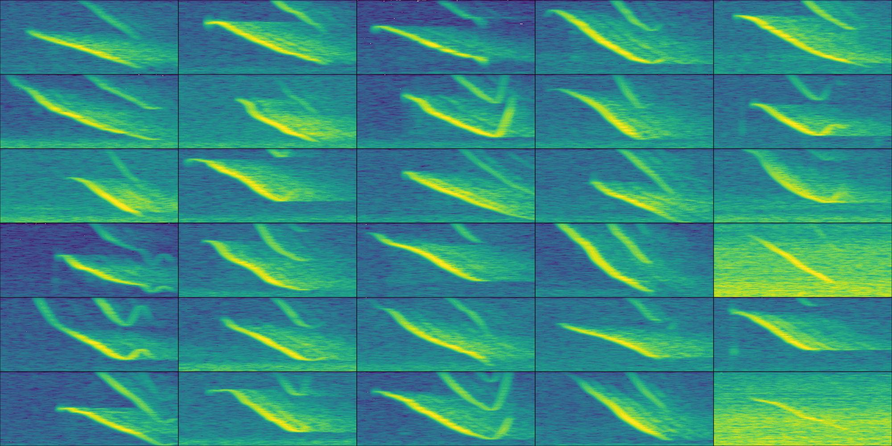
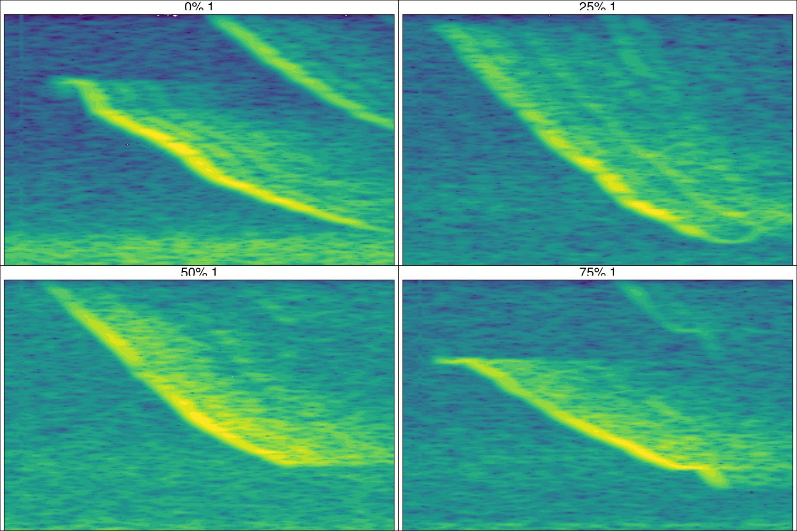
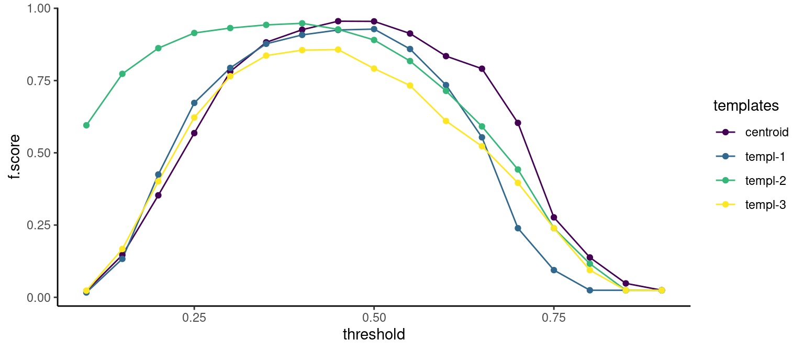

Code
# From CRAN would be
install.packages("ohun")
#load package
library(ohun)ohun
The data used in this tutorial (annotations and recordings) can be downloaded from here:
Install/load the package from CRAN as follows:
# From CRAN would be
install.packages("ohun")
#load package
library(ohun)To install the latest developmental version from github you will need the R package remotes:
remotes::install_github("maRce10/ohun")
#load package
library(ohun)library(warbleR)
library(ggplot2)
library(viridis)
data_path <- "DIRECTORY_WITH_SOUND_FILES_AND_ANNOTATIONS_HERE"
manual_ref <- read.csv(file.path(data_path, "manual_annotations_thyroptera.csv"))
This code creates a multipanel image with multiple spectrograms, one for each of the individuals/recordings in the complete data set (note that the output of the function catalog are image files saved in the sound file directory):
# select highest signal to noise ratio calls per individual
manual_ref_snr <- signal_2_noise(X = manual_ref, mar = 0.05)
# select 1 example per sound file
high_snr <- manual_ref_snr[ave(-manual_ref_snr$SNR, manual_ref_snr$sound.files, FUN = rank) <= 1, ]
# create catalogs
catalog(X = high_snr, flim = c(10, 45), nrow = 6, ncol = 5, ovlp = 90, height = 10, width = 20, same.time.scale = TRUE, mar = 0.005, wl = 512, gr = FALSE, spec.mar = 0, lab.mar = 0.001, rm.axes = TRUE, by.row = TRUE, box = FALSE, pal = viridis, collevels = seq(-100, 0, 5), labels = NULL, path = data_path)
set.seed(1)
train_files <- sample(unique(manual_ref$sound.files), size = 5)
test_files <- setdiff(manual_ref$sound.files, train_files)
train_ref <- manual_ref[manual_ref$sound.files %in% train_files, ]
test_ref <- manual_ref[manual_ref$sound.files %in% test_files, ]
# find templates
templates <- get_templates(train_ref, path = data_path, bp = c(10, 50), fast = TRUE, ovlp = , wl = 200, n.sub.spaces = 3)The first 2 principal components explained 0.51 of the variance
# create ext. selection table
templates_est <- selection_table(templates, extended = TRUE, confirm.extended = FALSE, path = data_path)
templates_est <- rename_est_waves(templates_est, new.sound.files = templates$template)
# create catalogs
catalog(X = templates_est, flim = c(10, 45), nrow = 2, ncol = 2, ovlp = 90, height = 10, width = 15, same.time.scale = TRUE, mar = 0.005, wl = 512, gr = FALSE, spec.mar = 0.4, lab.mar = 0.8, rm.axes = TRUE, by.row = TRUE, box = TRUE, pal = viridis, parallel = 10, collevels = seq(-100, 0, 5), img.prefix = "templates", path = data_path)
corr_templ_train <- template_correlator(
templates = templates_est,
path = data_path,
files = unique(train_ref$sound.files),
hop.size = 10,
ovlp = 70
)
opt_detec_train <- optimize_template_detector(
reference = train_ref,
template.correlations = corr_templ_train,
threshold = seq(0.1, 0.9, 0.05)
)

opt_detec_train <- opt_detec_train[order(opt_detec_train$f.score, decreasing = TRUE), ]
sub_opt_detec_train <- opt_detec_train[1:10, c("templates","threshold", "true.positives", "false.positives", "false.negatives", "recall", "precision", "f.score")]
sub_opt_detec_train
We used a threshold of 0.45 as te centroid template seems to behave well across thresholds.
# get correlation vectors for test files
corr_templ_test <- template_correlator(
templates = templates_est[templates_est$sound.file == "centroid", ],
path = data_path, files = unique(test_ref$sound.files),
hop.size = 10,
ovlp = 70
)
# detect on test files
detec_test <- template_detector(
template.correlations = corr_templ_test,
threshold = 0.45
)
diagnose_detection(reference = test_ref, detection = detec_test)| detections | true.positives | false.positives | false.negatives | splits | merges | overlap | recall | precision | f.score |
|---|---|---|---|---|---|---|---|---|---|
| 532 | 522 | 10 | 41 | 0 | 14 | 0.8345997 | 0.9271758 | 0.981203 | 0.9534247 |
[1] 0.9534247
Good performance on detecting Spix’s disc-winged social calls: F score was 0.953 for the training data set and 0.955 for the testing data
Some merged positives were found but notice that there are some overlapping signals in the reference annotation as well (can be checked with warbleR::overlapping_sels(manual_ref))
Session information
R version 4.1.0 (2021-05-18)
Platform: x86_64-pc-linux-gnu (64-bit)
Running under: Ubuntu 20.04.2 LTS
Matrix products: default
BLAS: /usr/lib/x86_64-linux-gnu/atlas/libblas.so.3.10.3
LAPACK: /usr/lib/x86_64-linux-gnu/atlas/liblapack.so.3.10.3
locale:
[1] LC_CTYPE=pt_BR.UTF-8 LC_NUMERIC=C
[3] LC_TIME=es_CR.UTF-8 LC_COLLATE=pt_BR.UTF-8
[5] LC_MONETARY=es_CR.UTF-8 LC_MESSAGES=pt_BR.UTF-8
[7] LC_PAPER=es_CR.UTF-8 LC_NAME=C
[9] LC_ADDRESS=C LC_TELEPHONE=C
[11] LC_MEASUREMENT=es_CR.UTF-8 LC_IDENTIFICATION=C
attached base packages:
[1] stats graphics grDevices utils datasets methods base
other attached packages:
[1] DT_0.26 ohun_0.1.0 ggplot2_3.4.0 viridis_0.6.2
[5] viridisLite_0.4.1 bioacoustics_0.2.8 warbleR_1.1.28 NatureSounds_1.0.4
[9] knitr_1.42 seewave_2.2.0 tuneR_1.4.1 remotes_2.4.2
loaded via a namespace (and not attached):
[1] Rcpp_1.0.9 lattice_0.20-44 fftw_1.0-7 assertthat_0.2.1
[5] digest_0.6.31 utf8_1.2.2 R6_2.5.1 Sim.DiffProc_4.8
[9] signal_0.7-7 evaluate_0.20 pillar_1.8.1 rlang_1.0.6
[13] rstudioapi_0.14 jquerylib_0.1.4 rmarkdown_2.20 labeling_0.4.2
[17] moments_0.14.1 stringr_1.5.0 htmlwidgets_1.5.4 igraph_1.3.5
[21] RCurl_1.98-1.9 munsell_0.5.0 proxy_0.4-27 compiler_4.1.0
[25] Deriv_4.1.3 xfun_0.36 pkgconfig_2.0.3 htmltools_0.5.4
[29] tidyselect_1.2.0 tibble_3.1.8 gridExtra_2.3 dtw_1.23-1
[33] fansi_1.0.3 crayon_1.5.2 dplyr_1.0.10 withr_2.5.0
[37] shinyBS_0.61 MASS_7.3-54 bitops_1.0-7 grid_4.1.0
[41] jsonlite_1.8.4 gtable_0.3.1 lifecycle_1.0.3 DBI_1.1.1
[45] magrittr_2.0.3 scales_1.2.1 cli_3.6.0 stringi_1.7.12
[49] pbapply_1.6-0 farver_2.1.1 sp_1.5-1 generics_0.1.3
[53] vctrs_0.5.2 rjson_0.2.21 tools_4.1.0 glue_1.6.2
[57] crosstalk_1.2.0 parallel_4.1.0 fastmap_1.1.0 yaml_2.3.7
[61] colorspace_2.0-3 soundgen_2.1.0